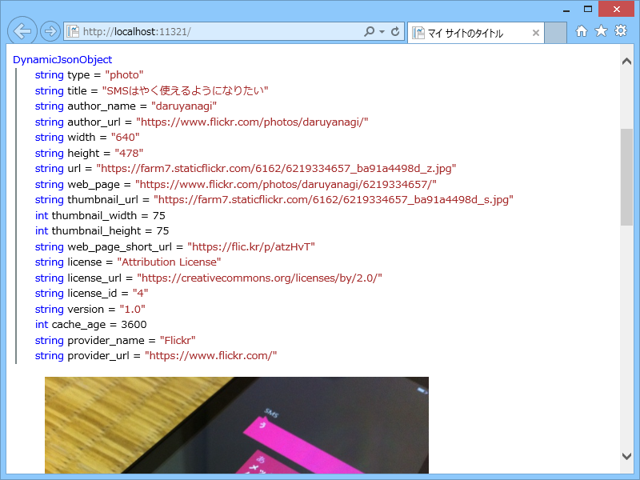
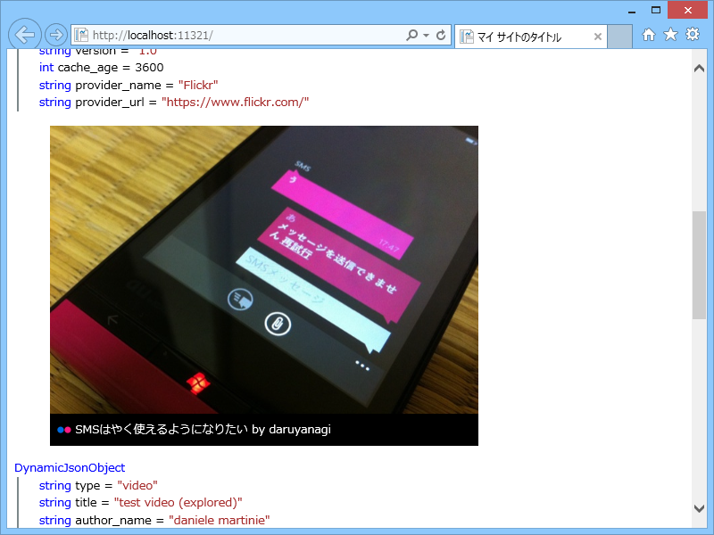

WebMatrix 3：oEmbed ヘルパーを作ってみた（２）
執筆日時：
WebMatrix 3：oEmbed ヘルパーを作ってみた - だるろぐ の続き。今回は Flickr の埋め込みをやってみようかと思う。
~/App_Code/OEmbed.cshtml
@helper Flickr(string url) { const string API_ENDPOINT = "http://www.flickr.com/services/oembed/";using (var downloader = new WebClient()) { try { // URL を組み立てて JSON の oEmbed データを取得 var request = string.Format("{0}?url={1}&format={2}", API_ENDPOINT, url, "json"); var oembed_data = downloader.DownloadString(request); var oembed_json = Json.Decode(oembed_data);
@ObjectInfo.Print(oembed_json) // デバッグのため
var embed_type = oembed_json.type as string;
switch (embed_type) // photo と video の二種類がある { case "photo": <figure> <img src='@oembed_json.url' alt='@oembed_json.title'> <figcaption> <img src='http://favicon.qfor.info/f/@oembed_json.provider_url' /> <a href='@oembed_json.web_page'>@oembed_json.title</a> by <a href='@oembed_json.author_url'>@oembed_json.author_name</a> </figcaption> </figure> break; case "video": <figure> @Html.Raw(oembed_json.html) </figure> break; default: break;
} } catch (Exception exception) { <p class='error'>@url: @exception.Message</p> } } }
~/Default.cshtml
<!DOCTYPE html><html lang="ja"> <head> <meta http-equiv="Content-Type" content="text/html; charset=utf-8"/> <meta charset="utf-8" /> <title>マイ サイトのタイトル</title> <link href="~/favicon.ico" rel="shortcut icon" type="image/x-icon" /> </head> <body> @OEmbed.Flickr("https://www.flickr.com/photos/daruyanagi/6219334657/") @OEmbed.Flickr("https://www.flickr.com/photos/dmartinie/5760711397/") </body> </html>
結果
たとえば Photo の場合。Twitter のときみたいに html を返してくれないので、自分で組み立てる。

<figure> <img src='https://farm7.staticflickr.com/6162/6219334657_ba91a4498d_z.jpg' alt='SMSはやく使えるようになりたい'> <figcaption> <img src='http://favicon.qfor.info/f/https://www.flickr.com/' /> <a href='https://www.flickr.com/photos/daruyanagi/6219334657/'>SMSはやく使えるようになりたい</a> by <a href='https://www.flickr.com/photos/daruyanagi/'>daruyanagi</a> </figcaption> </figure>
Video の場合。これは html があるのでそれを使う。

<figure> <object type="application/x-shockwave-flash" width="500" height="281" data="https://www.flickr.com/apps/video/stewart.swf?v=145061" classid="clsid:D27CDB6E-AE6D-11cf-96B8-444553540000"> <param name="flashvars" value="intl_lang=en-us&photo_secret=5f7c3bff83&photo_id=5760711397&flickr_show_info_box=true"></param> <param name="movie" value="https://www.flickr.com/apps/video/stewart.swf?v=145061"></param> <param name="bgcolor" value="#000000"></param> <param name="allowFullScreen" value="true"></param><embed type="application/x-shockwave-flash" src="https://www.flickr.com/apps/video/stewart.swf?v=145061" bgcolor="#000000" allowfullscreen="true" flashvars="intl_lang=en-us&photo_secret=5f7c3bff83&photo_id=5760711397&flickr_show_info_box=true" height="281" width="500"></embed></object> </figure>

写真の方は CSS でいい感じにデコってみた。なかなかいいかも。